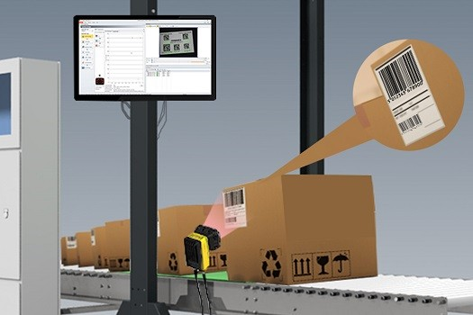
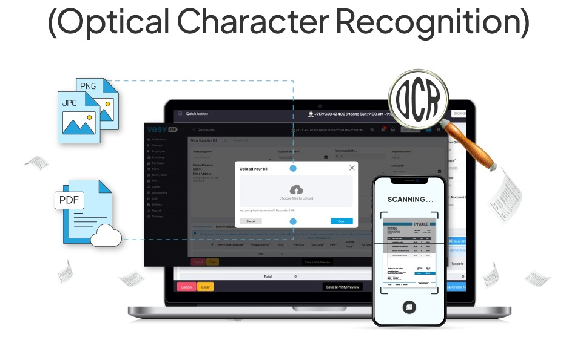
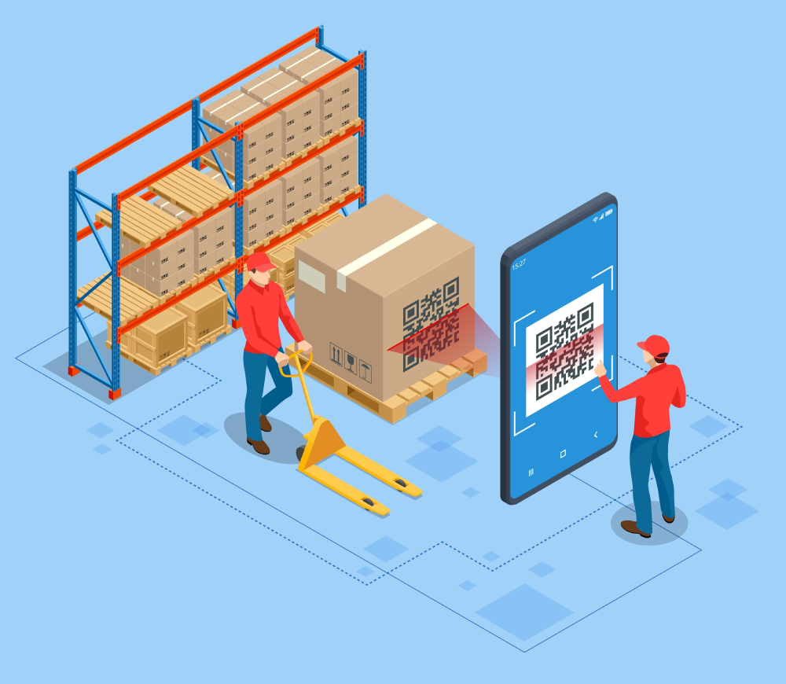
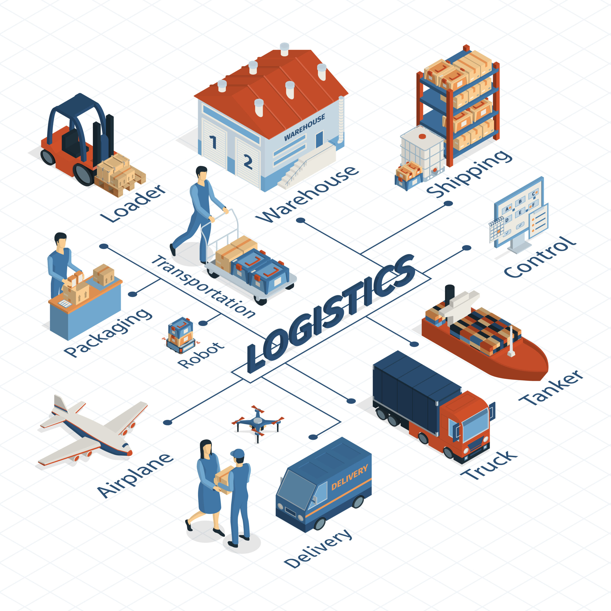
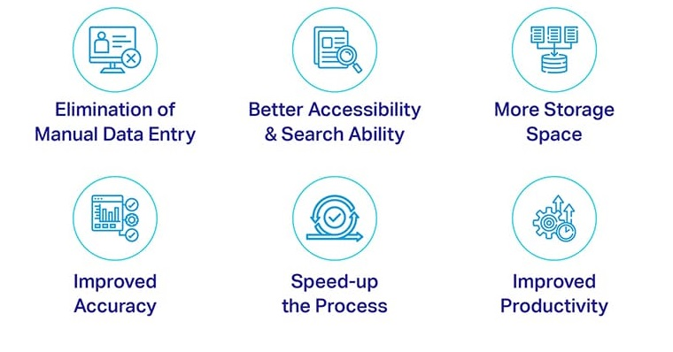

Incorporating OCR technology into inventory management systems
transforms traditional manual processes into efficient, automated
workflows. This integration leads to more accurate, real-time tracking
of inventory, enhancing overall operational performance and contributing
to a more responsive supply chain.

Optical Character Recognition (OCR) is a technology that converts
different types of documents—such as scanned paper documents, PDFs, or
images captured by a digital camera—into editable and searchable data.
OCR technology continues to evolve, incorporating advancements in
artificial intelligence and machine learning to improve accuracy and
handle complex documents.

Inventory management involves overseeing the flow of goods from
manufacturers to warehouses and from these facilities to point of sale.
It encompasses the processes of ordering, storing, tracking, and
controlling inventory to ensure that businesses can meet customer demand
without overstocking or understocking. Advanced technologies such as
inventory software and data analytics enhance these processes through
real-time tracking, demand forecasting, and automated replenishment.
Applications of OCR in Inventory Management

-
Automated Data Entry:
-
Scanning Documents: OCR enables the automatic
extraction of information from invoices, packing slips, purchase
orders, and shipping labels, reducing the need for manual data
entry and minimizing human errors.
-
Barcode and Label Recognition: By reading product
labels and barcodes, OCR systems can update inventory records in
real time, ensuring accurate tracking of stock levels.
-
Real-Time Inventory Updates:
-
Instant Stock Level Adjustments: As items are
scanned during receiving, storage, or shipping, OCR systems
automatically update inventory databases, providing up-to-date
stock information.
-
Enhanced Visibility: Real-time data allows for
better monitoring of inventory across multiple locations,
facilitating informed decision-making regarding stock
replenishment and distribution.
-
Improved Accuracy and Efficiency:
-
Error Reduction: Automating data capture with OCR
minimizes the risk of manual entry errors, leading to more
reliable inventory records.
-
Faster Processing: OCR accelerates the processing
of inventory-related documents, such as receipts and returns, by
quickly extracting and organizing relevant information.
-
Enhanced Inventory Tracking and Reconciliation:
-
Product Tracking: OCR facilitates the tracking of
products throughout the supply chain by capturing serial numbers,
batch numbers, and expiry dates, which is particularly beneficial
for perishable goods.
-
Inventory Reconciliation: By comparing scanned
data with digital records, OCR aids in identifying discrepancies
between physical stock and system inventories, ensuring alignment
and accuracy.
Benefits of Implementing OCR

-
Operational Efficiency: Automating data capture and
processing reduces the time spent on manual tasks, allowing staff to
focus on more strategic activities.
-
Cost Savings: By minimizing errors and streamlining
processes, OCR can lead to significant cost reductions in inventory
management operations.
-
Scalability: OCR systems can handle increasing
volumes of inventory data without a proportional increase in labor,
supporting business growth.